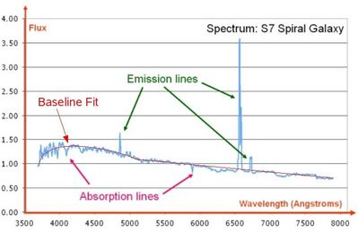

There are several definitions of baseline in astronomy:
- In radio astronomy a baseline is the vector connecting two radio telescopes that is used in interferometry to determine the fringe rate of a source at the nominal “phase centre” of an observation. For an interferometer with N elements there are N(N-1)/2 independent baselines. The pairs of antennae that are close together are good at measuring the large-scale structures in a source whereas the long baselines have better resolution and resolve the fine structures.
- In astronomical data, a baseline is a reference point for the measurement of values such as the flux of a source. For example, in spectral line data, the spectral continuum can be accounted for by fitting a polynomial to the variations in the data, ignoring any emission line features. This allows for a measurement of the true height of emission lines, which would have been artificially raised or lowered if the variations in the spectral continuum had not been removed. A baseline fit can account for not just the spectral continuum, but for other effects such as telescope and atmospheric variations in astronomical data.

Example of a baseline fit to spectral line data.